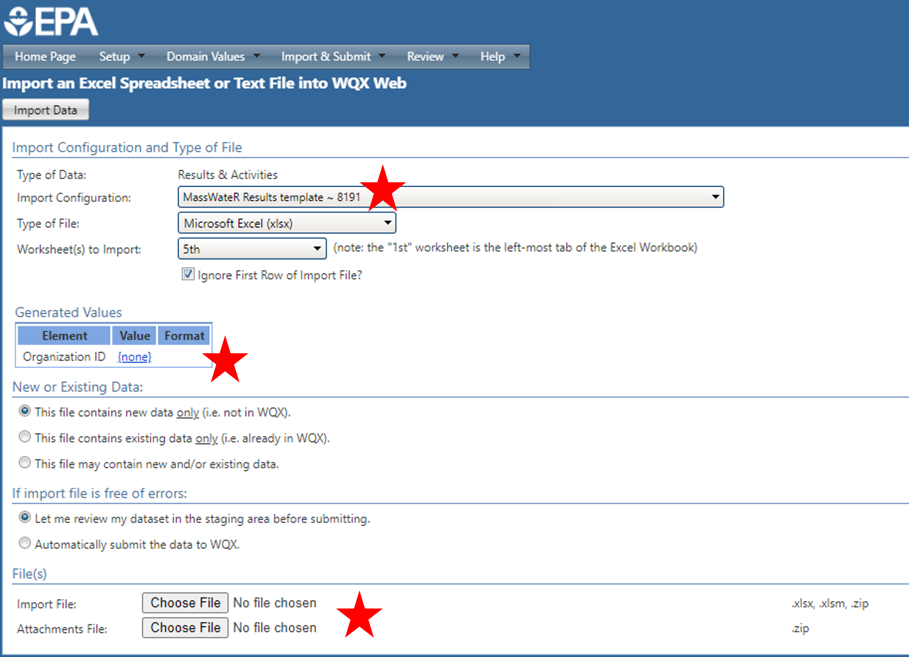

The MassWateR package includes additional tools for generating output that will facilitate upload of data to the EPA Water Quality Exchange (WQX). The function for generating the WQX output can be used once the required data are successfully imported into R (see the data input and checks vignette for an overview). The results data file, the data quality objectives file for accuracy, the site metadata, and the wqx metadata files are required to use these functions. The example data included with the package are imported here to demonstrate how to use the analysis functions:
library(MassWateR)
# import results data
respth <- system.file("extdata/ExampleResults.xlsx", package = "MassWateR")
resdat <- readMWRresults(respth)
#> Running checks on results data...
#> Checking column names... OK
#> Checking all required columns are present... OK
#> Checking valid Activity Types... OK
#> Checking Activity Start Date formats... OK
#> Checking depth data present... OK
#> Checking for non-numeric values in Activity Depth/Height Measure... OK
#> Checking Activity Depth/Height Unit... OK
#> Checking Activity Relative Depth Name formats... OK
#> Checking values in Activity Depth/Height Measure > 1 m / 3.3 ft... OK
#> Checking Characteristic Name formats... OK
#> Checking Result Values... OK
#> Checking QC Reference Values... OK
#> Checking for missing entries for Result Unit... OK
#> Checking if more than one unit per Characteristic Name... OK
#> Checking acceptable units for each entry in Characteristic Name... OK
#>
#> All checks passed!
# import accuracy data
accpth <- system.file("extdata/ExampleDQOAccuracy.xlsx", package = "MassWateR")
accdat <- readMWRacc(accpth)
#> Running checks on data quality objectives for accuracy...
#> Checking column names... OK
#> Checking all required columns are present... OK
#> Checking column types... OK
#> Checking for text other than <=, ≤, <, >=, ≥, >, ±, %, AQL, BQL, log, or all... OK
#> Checking Parameter formats... OK
#> Checking for missing entries for unit (uom)... OK
#> Checking if more than one unit (uom) per Parameter... OK
#> Checking acceptable units (uom) for each entry in Parameter... OK
#> Checking empty columns... OK
#>
#> All checks passed!
# import site metadata
sitpth <- system.file("extdata/ExampleSites.xlsx", package = "MassWateR")
sitdat <- readMWRsites(sitpth)
#> Running checks on site metadata...
#> Checking column names... OK
#> Checking all required columns are present... OK
#> Checking for missing latitude or longitude values... OK
#> Checking for non-numeric values in latitude... OK
#> Checking for non-numeric values in longitude... OK
#> Checking for positive values in longitude... OK
#> Checking for missing entries for Monitoring Location ID... OK
#>
#> All checks passed!
# import wqx metadata
wqxpth <- system.file("extdata/ExampleWQX.xlsx", package = "MassWateR")
wqxdat <- readMWRwqx(wqxpth)
#> Running checks on WQX metadata...
#> Checking column names... OK
#> Checking all required columns are present... OK
#> Checking unique parameters... OK
#> Checking Parameter formats... OK
#>
#> All checks passed!Generating output for WQX
The single function for generating output for upload to WQX is
tabMWRwqx(). This function will export a single Excel
workbook with three sheets, named “Project”, “Locations”, and “Results”.
The output is populated with as much content as possible based on
information in the input files. The remainder of the information not
included in the output will need to be manually entered before uploading
the data to WQX. All required columns are present, but individual rows
will need to be verified for completeness. It is the responsibility of
the user to verify this information is complete and correct before
uploading the data.
The workflow for using this function is to import the required data
(results, data quality objectives file for accuracy, site metadata, and
wqx metadata, as above) and to fix any errors noted on import prior to
creating the output. The function can be used with inputs as paths to
the relevant files or as data frames returned by
readMWRresults(), readMWRacc(),
readMWRsites(), and readMWRwqx(). For the
former, the full suite of data checks can be evaluated with
runkchk = T (default) or suppressed with
runchk = F, as explained in the relevant help files. In the
latter case, downstream analyses may not work if data are formatted
incorrectly.
The workbook can be created as follows by including the required files and specifying an output directory where the Excel file is saved (a temporary directory is used here). Once the function is done running, a message indicating success and where the file is located is returned. The Excel file can be further edited by hand as needed.
tabMWRwqx(res = resdat, acc = accdat, sit = sitdat, wqx = wqxdat, output_dir = tempdir())
#> Excel workbook created successfully! File located at /tmp/RtmpjMmgZA/wqxtab.xlsxAs a convenience, the input files can also be passed to the
tabMWRwqx() function as a named list using the
fset argument. This eliminates the need to individually
specify the input arguments.
# names list of inputs
fsetls <- list(
res = resdat,
acc = accdat,
sit = sitdat,
wqx = wqxdat
)
tabMWRwqx(fset = fsetls, output_dir = tempdir())The name of the output file can also be changed using the
output_file argument, the default being
wqxtab.xlsx. Warnings can also be turned off or on
(default) using the warn argument. This returns any
warnings when data are imported and only applies if the file inputs are
paths.
Submitting data to Mass DEP
If you are submitting your data to Mass DEP, you must follow all of their instructions as described on their External Data Submittal webpage. Data and QC data can be submitted using either the MassDEP data submission template OR by uploading data to WQX. If you are submitting through WQX you should complete the submission by notifying Mass DEP via email (WQData.Submit@mass.gov). The e-mail must include the group name / project name under which the data was submitted to WQX, a copy of the project QAPP (if not already submitted), a statement of data integrity, the MassWateR QC Report (with the raw data print out), and any other supporting data reports.
Uploading data to WQX
If desired, all rows from the WQX output file (created with
tabMWRwqx()) can be copied and pasted into the WQX
upload template (also available on the Resources
tab), which offers an enhanced spreadsheet layout with more interactive
functionality (e.g., drop-down lists, prompts) and additional tabs with
supporting information (e.g., instructions, field definitions). This
template is especially useful if manual edits to the data are needed
prior to WQX upload.
To upload data to WQX, you will need to create or sign into your WQX account. From there, you can upload your Projects, Locations, and Results spreadsheets individually. Note that Projects and Locations need only be uploaded once for your organization, unless the data change. For each spreadsheet upload, assign the appropriate MassWateR custom import configuration, check that your Organization ID is assigned, browse to your upload file, and select Import Data (image below). The next screen will notify you of upload status and prompt you to correct any errors or warnings that arise. More information on error resolution can be found in the WQX User Guide.
